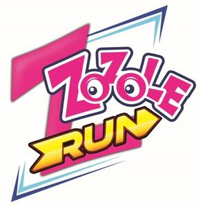

Trade Mark Journal No.2025/021 23 May 2025
WO0000001852506 (9,30,41)
Office of origin: European Union Intellectual Property Office (EUIPO)
Date of International Registration:11 December 2024
Date of designation in the UK:
11 December 2024

The mark contains the colours pink, yellow, orange, blue, dark blue, brown and black.
International priority date claimed: 10 September 2024
(European Union Intellectual Property Office (EUIPO))
(019077262)
- Class 9
- Computer gaming software; software programs for video games; computer game software, downloadable; augmented reality game software; game development software; video games [computer games] in the form of computer programs recorded on data carriers; media content; downloadable movies; downloadable animated cartoons; video films; digital files in the form of downloadable elements of a virtual world inspired by the appearance of confectionery or coins, authenticated by non-fungible tokens [NFTs]; downloadable virtual goods, namely elements of a virtual world inspired by the appearance of confectionery for use in online communities, online games and online virtual realities; downloadable virtual goods, namely photos of elements of a virtual world inspired by the appearance of means of payment, for use by virtual avatars; downloadable application software for mobile phones to enable users to view and make electronic transactions relating to the following goods: virtual goods, namely yoghurt, edible candy, chocolate, chocolate goods, sweets, jelly beans, semiconductor wafers, lollipops, chewing gum, beverages, representations of characters, confectionery-inspired elements of virtual reality, the aforesaid goods in online virtual environments; digital files in the form of elements of a virtual world inspired by the appearance of confectionery, using blockchain-based software and authenticated by smart contracts and non-fungible tokens [NFT] for use in online virtual environments; virtual and augmented reality software; downloadable digital image files authenticated by non-fungible tokens [NFTs]; downloadable computer software applications for minting non-fungible tokens [NFTs]; computer game software for use with on-line interactive games.
- Class 30
- Confectionery; sweetmeats [candy]; fruit confectionery; non-medicated candy; gum sweets; chewing candy; sweets (candy), candy bars and chewing gum; sweets; jelly beans; lollipops; chocolate candies; chocolate; chocolates; ice cream; wafers; coffee-based beverages; chocolate-based beverages; cocoa-based beverages.
- Class 41
- Video game services; provision of non-downloadable games on the Internet; information relating to computer gaming entertainment provided online from a computer database or a global communication network; providing on-line information in the field of computer gaming entertainment; arranging and conducting e-sports competitions; production of esports events; provision of on-line computer games; on-line gaming services; multimedia publishing of electronic publications; publication of texts, other than publicity texts; providing online non-downloadable comic books and graphic novels; creating animated cartoons; virtual reality game services provided on-line from a computer network; electronic games services, including provision of computer games on-line or by means of a global computer network.
MIESZKO S.A.
Representative: JWP RZECZNICY PATENTOWI DOROTA RZĄŻEWSKA SP. K., ul. Mińska 75, PL-03-828 Warszawa, POLAND